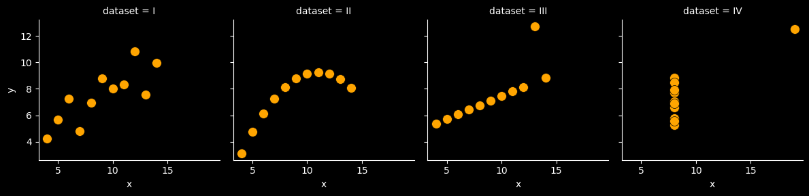

# importing matplotlib
# `plt` is the standard alias for `matplotlib.pyplot`
# similar to `pd` for `pandas`
from matplotlib import pyplot as plt Data Visualization
Visualizing data is a key part of data science. It is not only a way to communicate your findings to others but, more importantly, it is a way to understand your data, models and algorithms better.
Python has a rich ecosystem of libraries for data science, including for data visualization. The two most commonly used libraries for data visualization in Python are matplotlib and seaborn.

Here we will look at three ways to visualize data in Python:
Matplotlib: The most commonly used library for data visualization in Python.
Seaborn: A high-level interface to Matplotlib that makes it easier to create common types of plots.
Pandas: Native plotting capabilities built into Pandas.

matplotlib is the primary plotting library in Python. It is a very powerful and highly customizable library that can be used to create a wide variety of plots and graphs. However, despite its power, is can often be not very user-friendly, requiring a lot of code to create even simple plots.

seaborn is a data visualization library built on top of matplotlib that is easier to use and creates more visually appealing plots. It is designed to work well with pandas DataFrames and can be used to create a wide variety of plots with just a few lines of code. It is particularly useful for creating statistical plots, such as scatter plots, bar plots, and box plots.
Just as pandas is conventionally imported as pd, matplotlib.pyplot is conventionally imported as plt and seaborn is conventionally imported as sns.
import seaborn as sns
Anscombe’s Quartet
There has long been an impression amongst academics and practitioners that “numerical calculations are exact, but graphs are rough”. In 1973, Francis Anscombe set out to counter this common misconception by creating a set of four datasets that are today known as Anscombe’s quartet.
The code cell below downloads and loads it as pandas DataFrame this data set:
import pandas as pd
anscombe = sns.load_dataset("anscombe")
anscombe.head()| dataset | x | y | |
|---|---|---|---|
| 0 | I | 10.0 | 8.04 |
| 1 | I | 8.0 | 6.95 |
| 2 | I | 13.0 | 7.58 |
| 3 | I | 9.0 | 8.81 |
| 4 | I | 11.0 | 8.33 |
Now let’s see what the summary statistics of x and y features look like, with respect to dataset feature:
anscombe.groupby("dataset").describe()| x | y | |||||||||||||||
|---|---|---|---|---|---|---|---|---|---|---|---|---|---|---|---|---|
| count | mean | std | min | 25% | 50% | 75% | max | count | mean | std | min | 25% | 50% | 75% | max | |
| dataset | ||||||||||||||||
| I | 11.0 | 9.0 | 3.316625 | 4.0 | 6.5 | 9.0 | 11.5 | 14.0 | 11.0 | 7.500909 | 2.031568 | 4.26 | 6.315 | 7.58 | 8.57 | 10.84 |
| II | 11.0 | 9.0 | 3.316625 | 4.0 | 6.5 | 9.0 | 11.5 | 14.0 | 11.0 | 7.500909 | 2.031657 | 3.10 | 6.695 | 8.14 | 8.95 | 9.26 |
| III | 11.0 | 9.0 | 3.316625 | 4.0 | 6.5 | 9.0 | 11.5 | 14.0 | 11.0 | 7.500000 | 2.030424 | 5.39 | 6.250 | 7.11 | 7.98 | 12.74 |
| IV | 11.0 | 9.0 | 3.316625 | 8.0 | 8.0 | 8.0 | 8.0 | 19.0 | 11.0 | 7.500909 | 2.030579 | 5.25 | 6.170 | 7.04 | 8.19 | 12.50 |
Note that for all four unique values of dataset, we have eleven (x, y) values, as seen in count.
For each value of dataset, x and y have nearly identical simple descriptive statistics.
For all four datasets:
| Property | Value | Accuracy |
|---|---|---|
| Mean of x | 9 | exact |
| Sample variance of x: s2 | 11 | exact |
| Mean of y | 7.50 | to 2 decimal places |
| Sample variance of y: s2 | 4.125 | ±0.003 |
| Correlation between x and y | 0.816 | to 3 decimal places |
| Linear regression line | y = 3.00 + 0.500x | to 2 and 3 decimal places, respectively |
| Coefficient of determination of the linear regression: \(R^{2}\) | 0.67 | to 2 decimal places |
Now let’s create a scatter plot of the data using seaborn:
plt.style.use('dark_background')
g = sns.FacetGrid(anscombe, col="dataset");
g.map(sns.scatterplot, "x", "y", s=100, color="orange", linewidth=.5, edgecolor="black");
Anscombe’s quartet demonstrates both the importance of graphing data before analyzing it and the effect of outliers and other influential observations on statistical properties.
Choosing the Right Visualization
Data Visualization is arguably the most mistake-prone part of the data science process. It is very easy to create misleading visualizations that lead to incorrect conclusions. It is therefore important to be aware of the common pitfalls and to avoid them.
The following is a useful taxonomy for choosing the right visualization depending on your goals for your data: